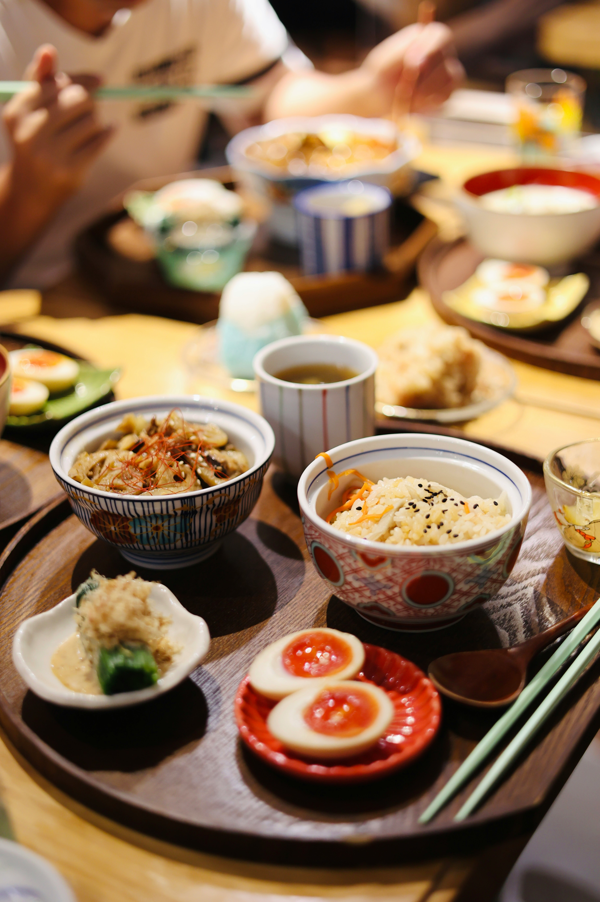
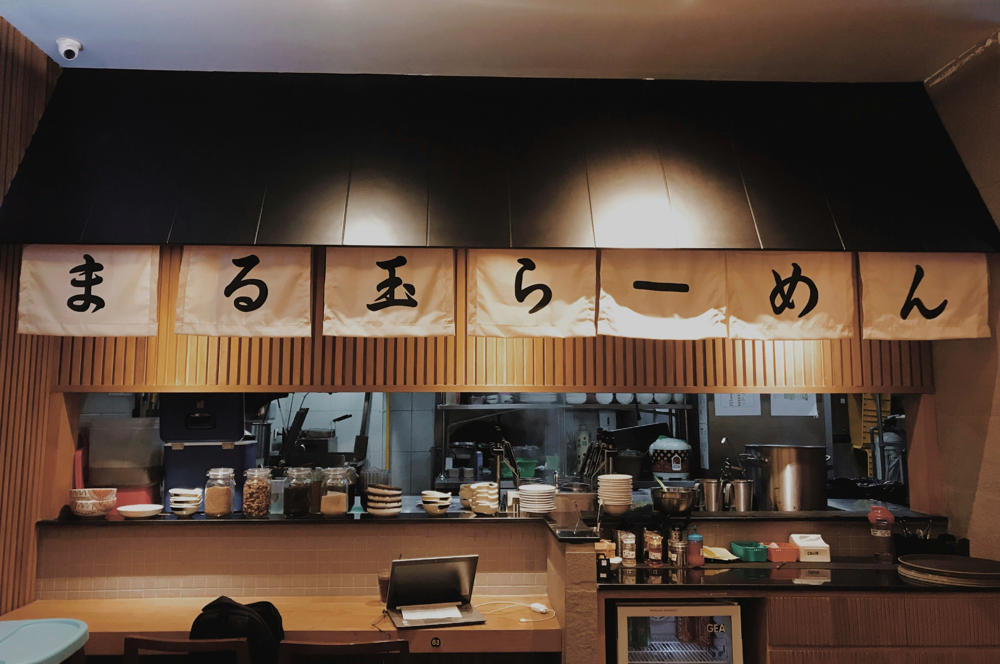
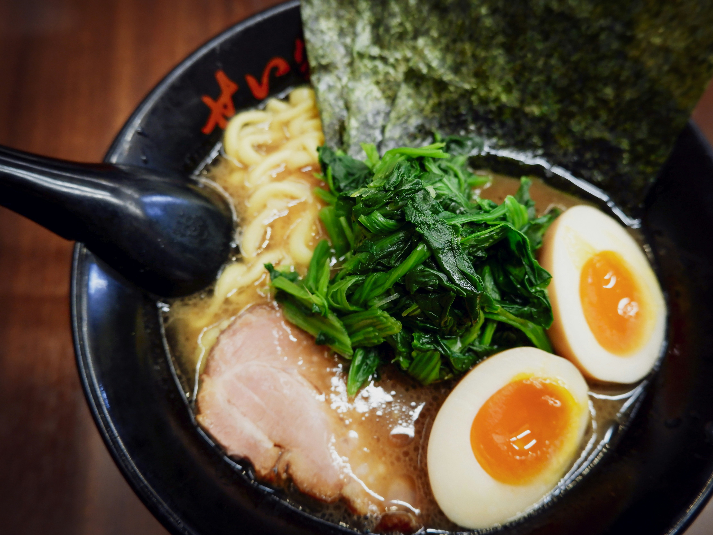

Descubra o sabor autêntico do Japão no Nori
No Nori, cada prato é uma viagem ao coração da culinária japonesa. Combinamos tradição e modernidade para oferecer uma experiência única, onde frescor, qualidade e cuidado em cada detalhe são os protagonistas.

Um espaço acolhedor para saborear o melhor da culinária japonesa
No Nori, cada detalhe foi pensado para criar um ambiente aconchegante, perfeito para momentos especiais ou para uma pausa tranquila no dia a dia. Nossa atmosfera combina elegância e conforto, transportando você para uma experiência única.


Venha conhecer o Nori e descubra como tradição e hospitalidade se encontram em um só lugar
A cozinha é comandada por chefs altamente treinados, que unem técnica e paixão para preparar pratos autênticos e sofisticados. Do sushi ao ramen, cada receita é elaborada com ingredientes frescos e selecionados, garantindo sabor e qualidade em cada mordida.
Os favoritos do Nori
Descubra os pratos que conquistaram nossos clientes: combinações irresistíveis de frescor e tradição, preparados com maestria pelos nossos chefs. Cada escolha é uma experiência única que revela o melhor da culinária japonesa.
Guioza de carne
Dumplings dourados e suculentos, recheados com carne e vegetais selecionados.

Onigiri de atum
Bolinho de arroz recheado e envolto em alga e com recheio de atum, simples e delicioso.

Rámen
Sopa japonesa rica e reconfortante, com caldo saboroso e acompanhamentos frescos.